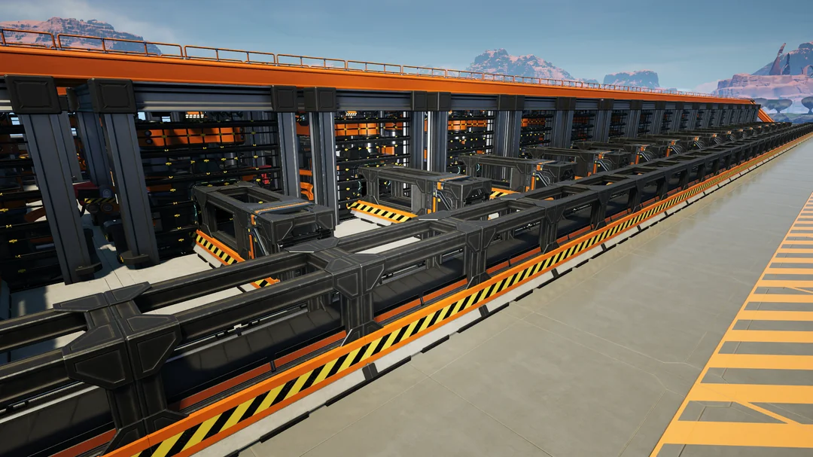

Methods
This page serves as a collection of multiple building techniques and logistical strategies that can be implemented into most Satisfactory builds.
Feel free to mix and match these methods to optimize your factories. Also, a tip: if you've been building floors of straight lines of splitters and mergers for what feels like days, you're doing something right.
- Contact:
- ryan.moore@utahtech.edu
- rpm7176@gmail.com
- +1(614)-657-8549